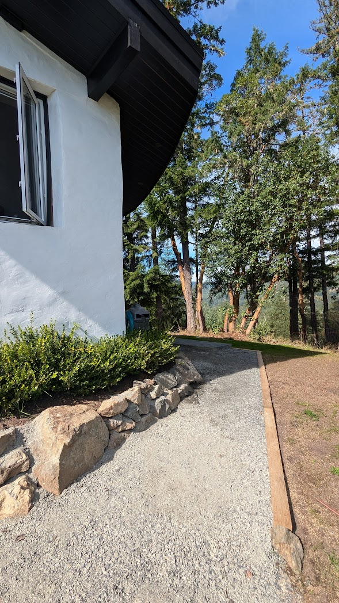

40 Acres
True mountaintop privacy and separation.
5876 Stoltze Rd

Cowichan Valley, British Columbia
Sun-filled ridge with panoramic valley and mountain views, native arbutus terrain, and fully developed off-grid systems.
At A Glance
True mountaintop privacy and separation.
1,282 sq ft, efficient and comfortable layout.
Major generation for modern off-grid living.
Strong storage for resilience and flexibility.
Low ongoing utility dependence.
5876 Stoltze Rd offers a rare blend of privacy, natural beauty, and self-reliant living. Positioned high above the valley, the property captures exceptional light and long-range views while remaining within practical reach of everyday services.
Photo Essay


Aerial
Understanding the ridge lines and sun path.


Nature
Native trees, rock, and light.


House
How the home sits in the landscape.


Highlights
Views that define the property.


Forty acres of mountaintop land provide real separation, quiet, and control over your surroundings.
Broad valley and mountain views with uncommon sunrise and sunset exposure from the same ridge.
Arbutus stands, rock outcrops, and warm light create a distinctly South Island West Coast character.
Over 15 kW of solar PV, around 40 kWh of lithium storage, dual Victron inverters, and backup generator designed for independent living.
Approximately 13-17 minutes to groceries, major shopping, and the new Cowichan District Hospital.
Approx. 15 kW PV, Tesla Level 2 charger, multiple solar chargers, and backup generator support.
Approx. 40 kWh lithium storage with two 5 kW Victron inverters (10 kW combined).
Private well (~2 gpm reported), 2,000-gallon cistern, drinking filtration, and constructed wetland septic with leach field.
Split heat pump, high-efficiency wood stove, hybrid electric heat-pump water heater, and propane on-demand backup.
Starlink high-speed internet and strong 5G coverage support modern work-from-home use.
Ongoing utilities focus mainly on garbage, maintenance, and modest winter propane use.
Exact dates and scope can be updated as final records are compiled.
The setting feels like its own elevated world, yet remains comfortably within day-to-day reach of services and recreation.
Outdoor access starts close to home while practical shopping and healthcare remain within a short drive.

The property is represented as F-1 zoning, which may support uses such as a home-based business, bed-and-breakfast operation, agriculture/forestry activity, and suite potential depending on final design and approvals. Buyers should independently confirm all permitted and intended uses with CVRD and qualified professionals before relying on any zoning interpretation.
FAQ
Yes. The setup is designed for full independence with solar PV, lithium storage, private well water, constructed wetland septic, and backup generator support. The intent is resilient day-to-day living with low dependence on conventional utility hookups.
Yes. The property has Starlink high-speed internet and reports strong 5G coverage in the area. This supports modern remote work, streaming, and connected daily use.
Access has been improved over time and is set up for practical passenger-vehicle use. Route details and seasonal considerations can be reviewed as part of the full information package.
Ongoing costs are relatively low because power, water, and septic are handled on site. Typical recurring expenses focus mainly on garbage service, routine maintenance, and modest winter propane use.